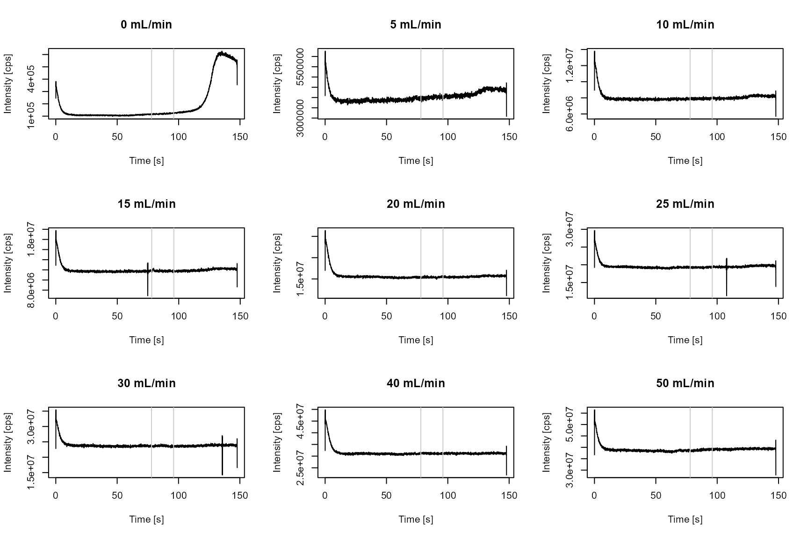
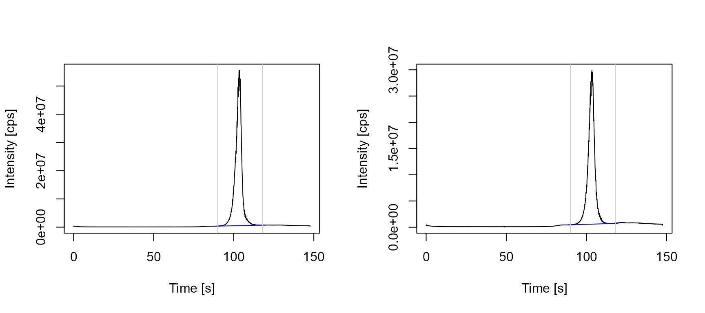
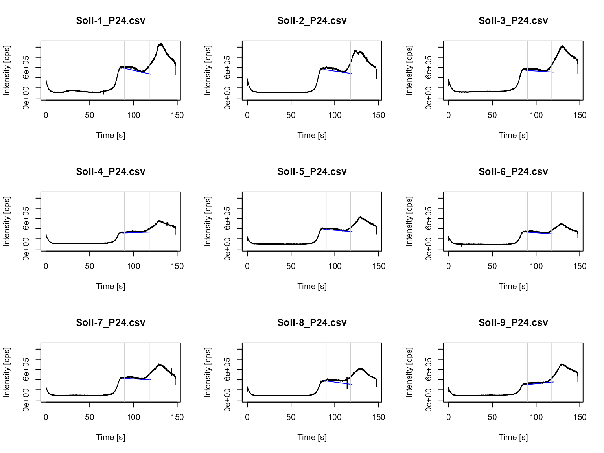

External gas calibration (ExtGasCal) workflow
Vera Scharek and Jan Lisec
Source:vignettes/workflow_ExtGasCal2.Rmd
workflow_ExtGasCal2.RmdIntroduction
External gas calibration is a new approach used in combination with ICP techniques and has been applied for the determination of microplastics with single particle ICP-MS and ETV/ICP-MS.The working principle is based on the introduction of a dynamically diluted calibration gas into the ICP-MS system. Consequently, data processing requires calculation of a mean value from the continuous signal curves.
The workflow external gas calibration (ExtGasCal) is compatible with ICP-MS or ICP-OES data.
In the package ETVapp, we provide the example data of
microplastic measurements. They can be accessed by
ETVapp::ETVapp_testdata[['ExtGasCal']].
library(ETVapp)
td <- ETVapp::ETVapp_testdata[['ExtGasCal']]Calibration data
Import the calibration data and check the available isotope intensities recorded (see column names).
cali_imp <- td[['Cali']]
str(cali_imp[[1]])
#> 'data.frame': 4258 obs. of 4 variables:
#> $ Time: num 0.036 0.07 0.105 0.14 0.174 0.209 0.244 0.278 0.313 0.348 ...
#> $ 13C : num 338127 354037 352302 342715 349956 ...
#> $ 80Se: num 15591099 15197049 15120592 15045815 15256703 ...
#> $ 26Mg: num 3900 4000 4100 4401 4000 ...Select the isotope 13C (parameter c1) and set
filter length fl = 9 for Savitzky-Golay smoothing.
process_data() provides optional correction with an
internal standard (parameter c2) and smoothing could be omitted
with fl=NULL.
anlt <- "13C"
time_col <- "Time"
cali_pro <- process_data(data = cali_imp, c1 = anlt, fl = 9, wf = "ExtGasCal")
# observe the intensity modification made by process_data()
gt::gt(head(cbind(
cali_imp[[1]],
setNames(cali_pro[[1]], paste0(" ", colnames(cali_pro[[1]])))
))) |>
gt::tab_spanner(label = "processed", columns = 5:6) |>
gt::tab_spanner(label = "original", columns = 1:4)|
original
|
processed
|
||||
|---|---|---|---|---|---|
| Time | 13C | 80Se | 26Mg | Time | 13C |
| 0.036 | 338127.3 | 15591099 | 3900.434 | 0.036 | 245428.4 |
| 0.070 | 354036.6 | 15197049 | 4000.456 | 0.070 | 356282.9 |
| 0.105 | 352302.2 | 15120592 | 4100.479 | 0.105 | 381564.9 |
| 0.140 | 342715.0 | 15045815 | 4400.552 | 0.140 | 337825.8 |
| 0.174 | 349955.9 | 15256703 | 4000.456 | 0.174 | 347335.7 |
| 0.209 | 348731.9 | 15164282 | 2400.164 | 0.209 | 346332.2 |
Signal evaluation
Receive mean signal intensities via the peak picking method
“mean signal”. The signal integration range is defined by
peak_start and peak_end. Gas flows [mL/min] are
asigned to the signal data with tab_cali(). The parameter
fac enables the input of a conversion factor, e.g. for
mass percentage, molar fractions, when computing the gas flows in
µg/s.
cali_sig <- get_peakdata(
cali_pro,
int_col = anlt,
PPmethod = "mean signal",
peak_start = 78,
peak_end = 96
)
gas_flow <- extract_unique_number(names(cali_pro))
fac <- 1.661 * 0.01104347 * 12/44
cali_peaks <- tab_cali(
peak_data = cali_sig,
wf = "ExtGasCal",
std_info = gas_flow,
fac = fac
)
gt::gt(cali_peaks)| Isotope | Start [s] | End [s] | Mean Signal [cps] | Gas flow [nL/min] | Gas flow [pg/s] |
|---|---|---|---|---|---|
| 13C | 78 | 96 | 119473.2 | 0 | 0.000000 |
| 13C | 78 | 96 | 4001034.2 | 5 | 0.416891 |
| 13C | 78 | 96 | 7896885.9 | 10 | 0.833782 |
| 13C | 78 | 96 | 11786444.7 | 15 | 1.250673 |
| 13C | 78 | 96 | 15397207.9 | 20 | 1.667564 |
| 13C | 78 | 96 | 19274547.6 | 25 | 2.084455 |
| 13C | 78 | 96 | 23652121.3 | 30 | 2.501346 |
| 13C | 78 | 96 | 31138034.0 | 40 | 3.335128 |
| 13C | 78 | 96 | 38843086.7 | 50 | 4.168910 |
The following code will plot the time scans of the calibration standards. The evaluated signal range is framed by grey vertical lines.
par(mfrow=c(3,3))
for (i in 1:9) {
plot(cali_pro[[i]], type="l", ylab = "Intensity [cps]", xlab = "Time [s]", main = paste(cali_peaks[i,5], "mL/min"))
abline(v=cali_peaks[i,2:3], col=grey(0.8))
}
Peak areas are plotted against the gas flows. Calibration parameter obtained through linear regression are provided as output data.frame.
cm <- calc_cali_mod(df = cali_peaks[,c(5,4)], wf = "ExtGasCal")
par(mfrow=c(1,1))
plot(cali_peaks[,c(5,4)])
abline(a = cm[1,3], b = cm[1,1])
gt::gt(cm)| Slope [cps s/pg] | Slope error [cps s/pg] | Intercept [cps] | Intercept error [cps] | R square |
|---|---|---|---|---|
| 775407.6 | 3458.054 | 100482.6 | 92034.5 | 0.9998608 |
Sample analysis
Repeat the procedure for the sample data.
smpl_pro <- process_data(data = td[['Samples']], c1 = anlt, fl = 9, wf = "ExtGasCal")
str(smpl_pro[[1]])
#> 'data.frame': 4258 obs. of 2 variables:
#> $ Time: num 0.036 0.07 0.105 0.14 0.174 0.209 0.244 0.278 0.313 0.348 ...
#> $ 13C : num 257688 374319 402399 355778 359845 ...
ps <- 90
pe <- 118
cf <- 50
smpl_peaks <- get_peakdata(
smpl_pro,
int_col = anlt,
PPmethod = "Peak (manual)",
minpeakheight = 1000000,
peak_start = ps,
peak_end = pe
)
gt::gt(smpl_peaks)| Isotope | Start [s] | End [s] | Area [cts] | BLmethod |
|---|---|---|---|---|
| 13C | 90 | 118 | 227316087 | modpolyfit |
| 13C | 90 | 118 | 130323678 | modpolyfit |
Generate baseline data from a time scan excerpt and plot the sample time scan with integration parameter.
smpl_BL <- lapply(1:length(smpl_pro), function(i) {
flt <- (min(which(smpl_pro[[i]][,time_col]>=ps))-cf):(max(which(smpl_pro[[i]][,time_col]<=pe))+cf)
ETVapp:::blcorr_col(
df = smpl_pro[[i]][flt,c(time_col, anlt)],
nm = anlt,
BLmethod = "modpolyfit",
rval = "baseline",
amend = "_BL")
})
par(mfrow=c(1,2))
for (i in 1:2) {
plot(smpl_pro[[i]], type="l", ylab = "Intensity [cps]", xlab = "Time [s]")
lines(x = smpl_BL[[i]][,c("Time")], y = smpl_BL[[i]][,3], col = "blue")
abline(v=smpl_peaks[i,2:3], col=grey(0.8))
}
Compute the sample result based on calibration model with the following code. The input of a mass fraction allows for result calculation of the micro plastic content (content as analyte) from the carbon mass (content as element).
w_PE <- 0.856
sample_mass = c(0.99, 1.02)
gt::gt(tab_result(
smpl_peaks,
a = cm[1,3],
b = cm[1,1],
wf = "ExtGasCal",
mass_fraction2 = w_PE,
sample_mass = sample_mass
))| Isotope | Start [s] | End [s] | Area [cts] | BLmethod | Analyte mass as element [pg] | Analyte mass [pg] | Mass fraction | Sample mass [mg] | Content as element [ppb] | Content as analyte [ppb] |
|---|---|---|---|---|---|---|---|---|---|---|
| 13C | 90 | 118 | 227316087 | modpolyfit | 293.0273 | 342.3216 | 0.856 | 0.99 | 295.9872 | 345.7794 |
| 13C | 90 | 118 | 130323678 | modpolyfit | 167.9416 | 196.1934 | 0.856 | 1.02 | 164.6486 | 192.3465 |
Limits of detection and quantification
Blank measurements are imported and processed as follows. For estimating the limit of detection (LOD) and quantification (LOQ) according to the blank value method, integrate the blank signals in the peak time window.
blnk_pro <- process_data(data = td[['Blanks']], c1 = anlt, fl = 9, wf = "ExtGasCal")
blnk_BL <- lapply(1:length(blnk_pro), function(i) {
flt <- (min(which(blnk_pro[[i]][,time_col]>=ps))-cf):(max(which(blnk_pro[[i]][,time_col]<=pe))+cf)
ETVapp:::blcorr_col(
df = blnk_pro[[i]][flt,c(time_col, anlt)],
nm = anlt,
BLmethod = "modpolyfit",
rval = "baseline",
amend = "_BL")
})
blnk_peaks <- get_peakdata(
blnk_pro,
int_col = anlt,
PPmethod = "Peak (manual)",
BLmethod = "modpolyfit",
peak_start = ps,
peak_end = pe
)
gt::gt(blnk_peaks)| Isotope | Start [s] | End [s] | Area [cts] | BLmethod |
|---|---|---|---|---|
| 13C | 90 | 118 | 1187689.2 | modpolyfit |
| 13C | 90 | 118 | 1341806.9 | modpolyfit |
| 13C | 90 | 118 | 969971.8 | modpolyfit |
| 13C | 90 | 118 | 527440.8 | modpolyfit |
| 13C | 90 | 118 | 645976.3 | modpolyfit |
| 13C | 90 | 118 | 552234.9 | modpolyfit |
| 13C | 90 | 118 | 794772.3 | modpolyfit |
| 13C | 90 | 118 | 1403571.9 | modpolyfit |
| 13C | 90 | 118 | 594962.9 | modpolyfit |
par(mfrow=c(3,3))
for (i in 1:min(length(blnk_pro), 10)) {
ylim <- c(0, max(sapply(blnk_pro, function(x) {max(x[,2])})))
plot(blnk_pro[[i]], type="l", main = names(blnk_pro)[i], ylab="Intensity [cps]", xlab = "Time [s]",ylim=ylim)
lines(x = blnk_BL[[i]][,c("Time")], y = blnk_BL[[i]][,3], col = "blue")
abline(v=blnk_peaks[i,2:3], col=grey(0.8))
}
The LOD and LOQ are estimated as three and ten times the standard deviation of the blank values divided by the slope of the linear calibration curve. At least three input values are required for statistical evaluation. Less than the recommended 10 entries will still give a result. The input of a theoretical sample mass will compute the LOD and LOQ per sample mass. Figures of merit are provided related to carbon (measured element) and polyethylene (analyte).
gt::gt(tab_LOX(x = blnk_peaks[,4], cali_slope = cm[1,1], wf = "ExtGasCal", mass_fraction2 = w_PE))
#> At least ten blank values are recommended for estimating the LOD and LOQ.| LOD as element [pg] | LOQ as element [pg] | Mass fraction | Sample mass [mg] | LOD as analyte [pg] | LOQ as analyte [pg] | LOD per sample mass [ppb] | LOQ per sample mass [ppb] |
|---|---|---|---|---|---|---|---|
| 1.343089 | 4.476964 | 0.856 | 1 | 1.569029 | 5.230098 | 1.343089 | 4.476964 |